플라즈마와 식각 정리
PART 1. 플라즈마와 식각의 원리 — 습식식각의 한계 · 플라즈마 · DC/RF 플라즈마 · Sheath · Glow Discharge · 스퍼터링 · 화학 식각 · RIE
PART 2. 차세대 플라즈마 식각 — HDP(ICP·ECR) · Source/Bias RF · DRIE(Bosch) · ALE · Cryogenic Etching · 펄스 플라즈마
1. 습식식각의 한계
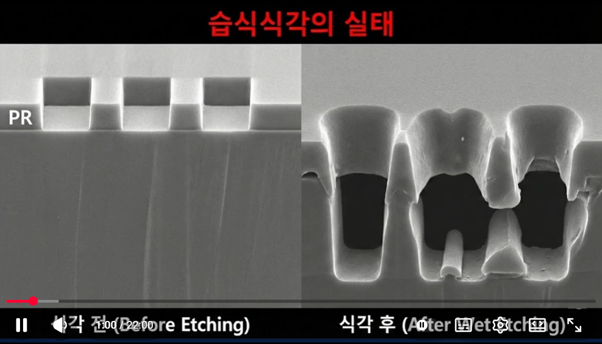
- 습식식각은 등방성 식각이기 때문에 미세화에는 한계가 존재한다.
2. 플라즈마란 무엇인가
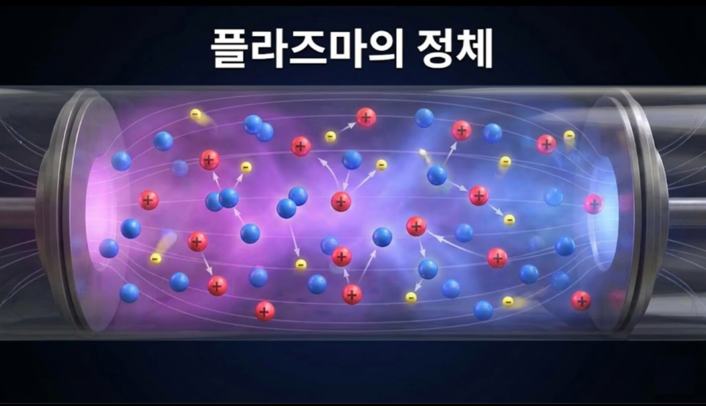
- 플라즈마는 부분적으로 이온화되어 있기 때문에 기체처럼 흐르면서도 이온이 있어 전기장에 반응하게 된다. 하지만 모든 기체 분자가 이온화 되어 있는 것은 아니다.
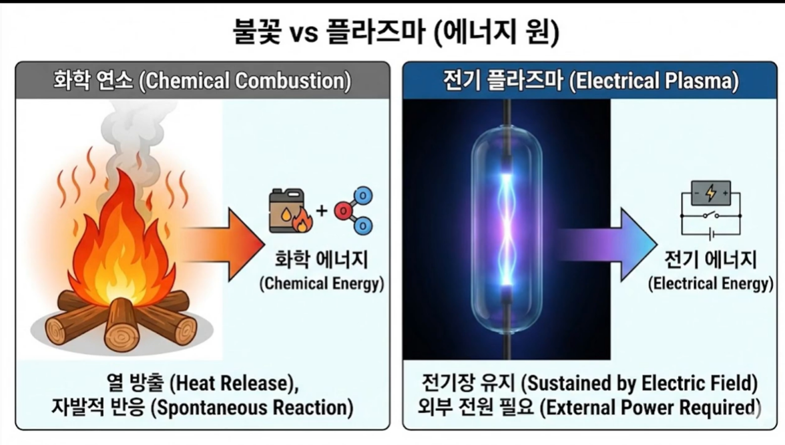
- 플라즈마는 전기 에너지에 의해서 발현되며 진공 상태에서 진행되어야 한다. m.f.p가 확보되어야 강하게 충돌할 수 있다
3. 전자와 이온의 응답 차이: Sheath의 탄생
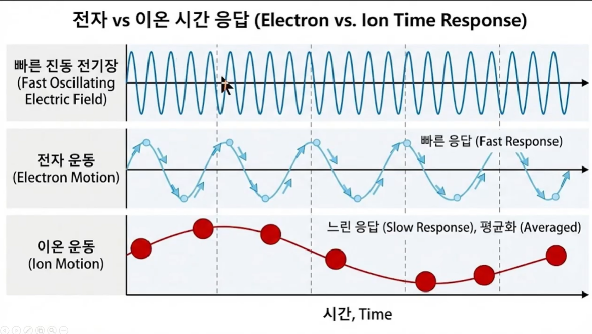
- 전자와 양이온의 질량 차이가 응답 속도의 차이를 발생시키고, 이 현상에 의해 Sheath 영역이 생기게 되는 것이다.
4. DC 플라즈마의 한계
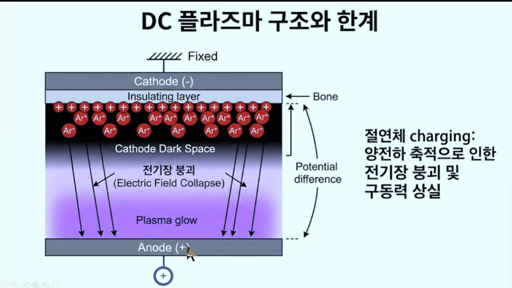
- 웨이퍼는 주로 음극 쪽에 존재하는데, 절연체가 사용되는 공정에서는 양이온들이 쌓이게 된다. 양이온들이 쌓이게 되면 전압이 상승되어서 전기장이 상쇄되고 플라즈마가 꺼져버리게 된다.
5. RF 플라즈마
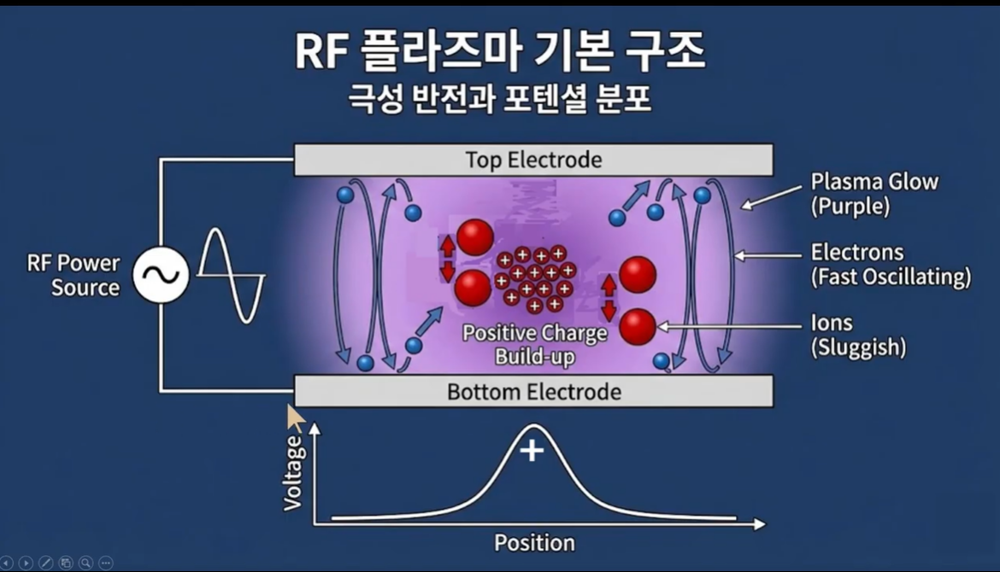
- 이러한 문제가 있기 때문에 교류 RF 파워를 사용하게 된다.
- 전자는 왔다갔다 빠르게 응답되는데, 양이온들은 무겁기 때문에 잘 움직이지 못하고 중앙부에 몰려있게 된다. 그래서 전압을 보면 가운데에 높은 Voltage를 갖게 된다.
5-1. 전극 면적과 전압 강하
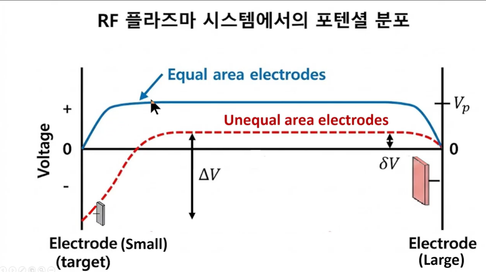
- 그래서 파란색처럼 전극의 두 면적이 동일하다면 한쪽으로 치우칠 이유가 없다.
- 하지만 한쪽의 면적이 작은 경우에는 면적이 작은 쪽으로 전압의 강하가 일어나게 된다.
*전압 강하가 일어나는 이유에 대해서는 설명해주시지 않았고, 결과론적으로 전극이 작으면=전압 강하라고 알려주셨다.
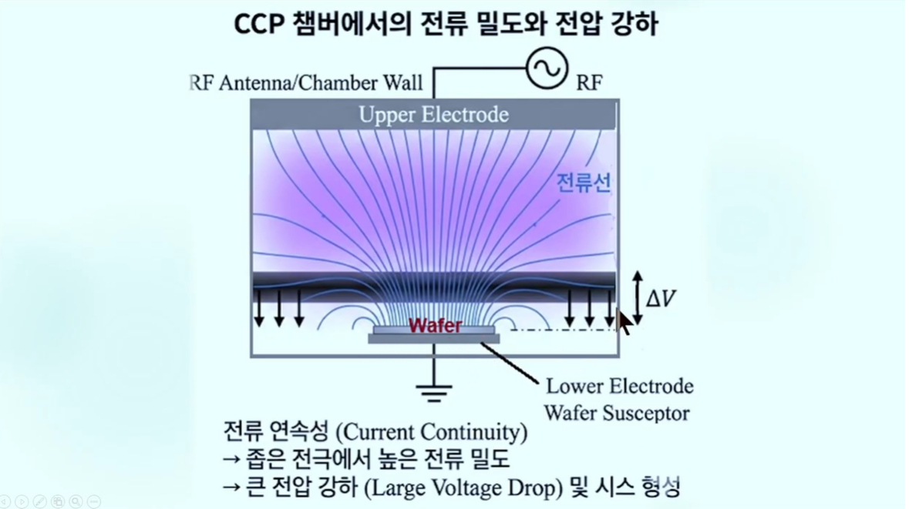
- Chamber 쪽 그러니까 위쪽은 면적이 넓고, Wafer를 올려놓는 전극 쪽은 면적이 매우 좁다. 그래서 집중적인 전압 강하가 면적이 좁은 wafer 영역에서 일어나게 된다.
- 그래서 Sheath 영역이 생기게 되는 것이다.
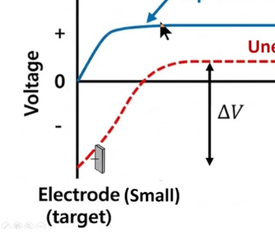
- 그래서 빨간색 영역을 보면 전압강하가 일어나서 뚝 떨어지게 되고, 그래서 이 부분에서 양이온들이 맹렬하게 달려가서 박게 되는 것이다.
6. Glow Discharge와 Dark Space
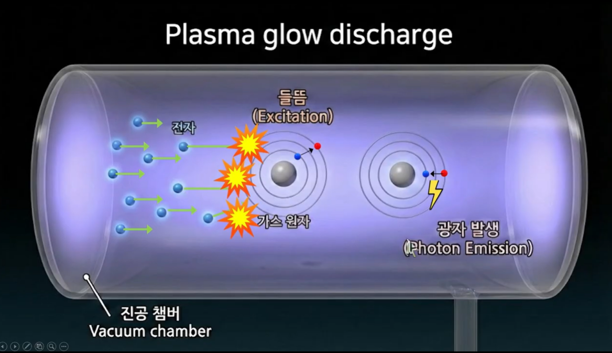
- 플라즈마가 밝은 광채를 띠는 것을 Glow discharge라고 한다. 들뜬 상태에서 바닥 상태가 되면서 에너지를 방출하게 되고, 그게 빛의 형태로 방출되는 것이다.
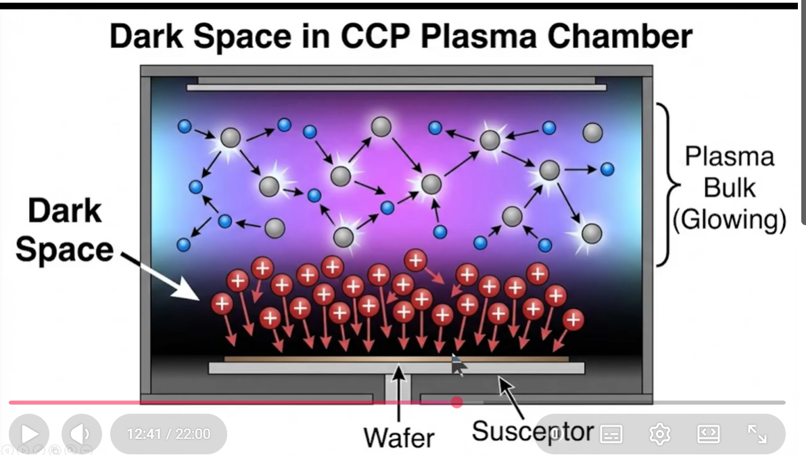
- Dark Space가 일어나는 영역은 주로 양이온들만 존재하니 Glow discharge가 일어나지 않아 검은색으로 보이는 것이다. 그래서 Sheath 영역은 검은색으로 보인다.
7. 이온은 왜 수직으로 날아오는가
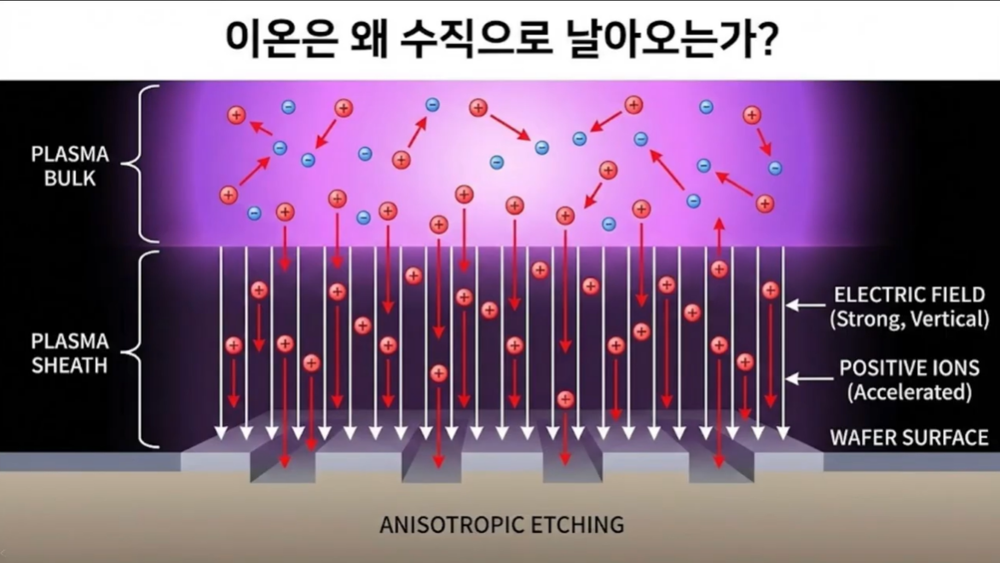
- 이 비등방성(이방성) 식각이 가능해지는 이유는 바로 Sheath 영역에서의 전압강하로 인한 양이온들의 웨이퍼 방향으로의 전기장에 따른 웨이퍼로의 수직 충돌 때문이다.
- 근데 이걸 스퍼터링 식각이라고도 한다고 함. 수직 식각인데.
8. 식각 메커니즘
8-1. 물리적 식각: 스퍼터링
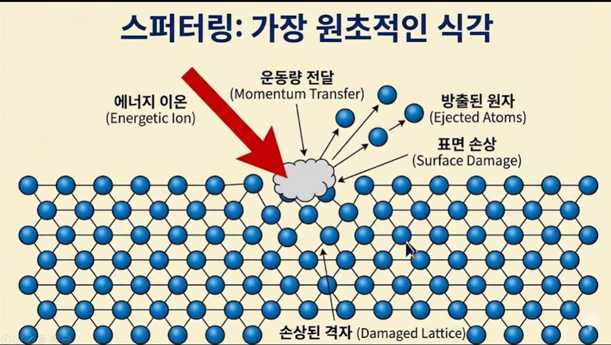
- Ar⁺ 애들이 수직방향에서 때리면 실리콘 원자를 때리면 격자에서 원자가 뛰쳐 나가게 된다.
- 그렇지만 선택비가 없고 매우 강한 힘으로 때려서 결정구조에 손상이 일어난다.
- 그래서 Sputtering 식각 자체는 Plasma를 통해 가능한 것이지만(이전에 헷갈렸던 부분) 현대에 선택비가 중요한 이 시점에서는 사용하기 어렵다.
8-2. 화학적 식각
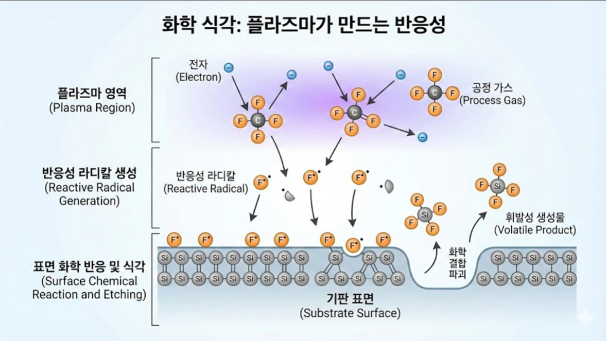
- 화학적인 식각으로는 반응성이 높은 gas를 사용하는데 주로 불소와 염소를 사용한다.
- CF₄ 같은 Gas를 넣어주게 되면 충돌에 의해 반응성 라디칼 원자들이 생겨나게 된다. 그 이후에 Si 표면에 흡착되게 되고, 그러면 SiF₄가 형성되는데 이게 휘발성이 강해서 날라가게 된다.
- 수직 식각이 안되고 화학 반응에만 맡기기 때문에 등방성 식각이 일어나서 사용하기가 어렵다.
8-3. Ion Enhanced Etching (RIE)
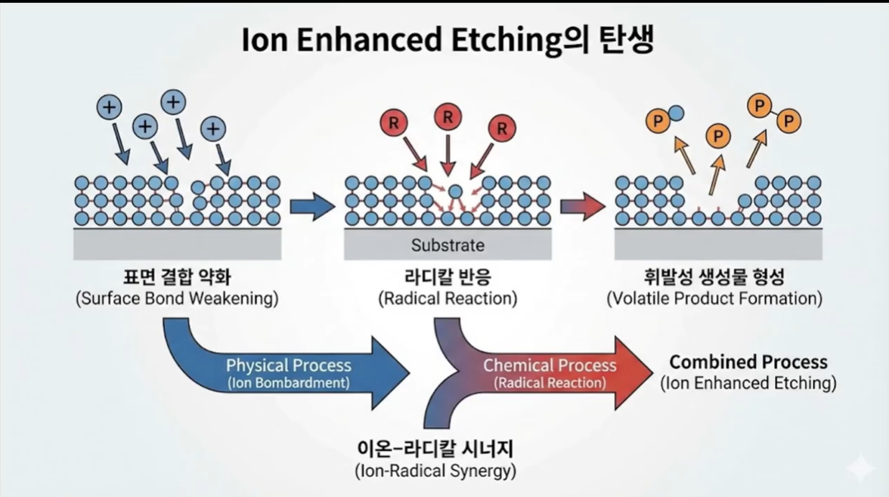
- 그래서 식각을 제대로 하기 위해서는 물리적, 화학적 방식을 모두 사용해야한다. 그리고 이 둘 방법을 같이 사용하는게 Ion Enhanced Etching 이라고 한다. 다른 말로는 RIE라고도 한다.
8-4. RIE가 비등방성 식각이 되는 이유
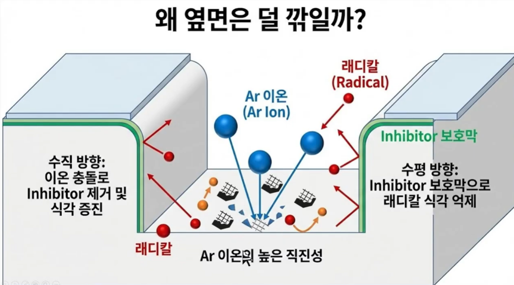
- 해당 RIE 방식은 왜 수직 방향으로의 비등방성 식각이 가능한 것일까?
- Ar⁺ 양이온들이 수직방향으로 Si 을 때려서 격자에 결합된 Si의 결합을 약하게 하고, 보호막(유기물 찌꺼기)이 있어도 물리적으로 쳐주기 때문에 Radical 자체는 이곳저곳 붙겠지만 반응이 일어날 수 있는 곳은 수직 방향 쪽인 것이다. (더 지배적 100%는 아닐테니~)
- 측벽에는 Etching을 하고 나서 찌꺼기처럼 남게 된다. 이에 따라 생긴 유기물 찌꺼기가 마치 보호막처럼 기능해서 측벽을 라디칼로부터 보호해주게 된다.
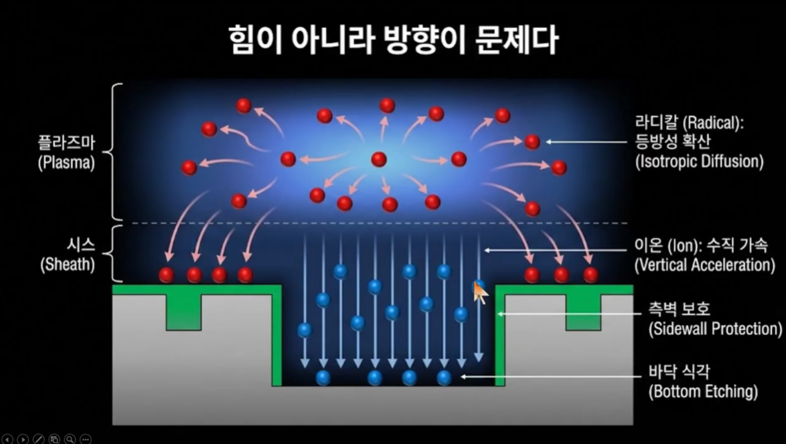
- 비등방성 Ethcing은 플라즈마에 의해 생성되는 라디칼과, 양이온이 있고, 그 중에 양이온들이 Sheath 영역에서 수직으로 강하게 웨이퍼를 타격할 때 함께 라디칼의 화학반응이 일어나면 비등방성 수직 식각이 가능해진다.
8-5. 식각이 나아갈 방향
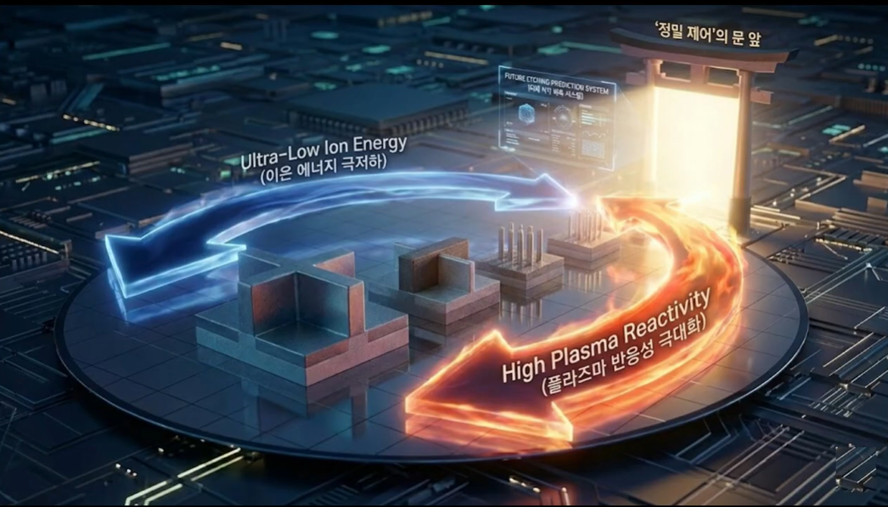
- 식각이 발전해야하는 방향성은 무식하게 때려주는 애가 아니라 원하는 곳만 국부적으로 하지만 선택비는 높게끔 하는 플라즈마 식각 방식을 기대한다.
- 그래서 뒤 내용에서는 플라즈마의 형성과 이온의 타격을 구분하기 위한 노력을 어떻게 해가는지 그리고 차세대 식각 기술은 무엇인지에 대해 배우게 된다.
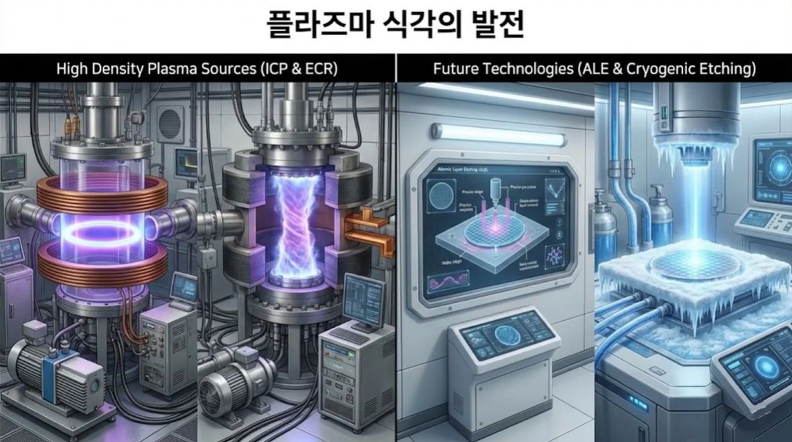
9. CCP의 한계와 HDP
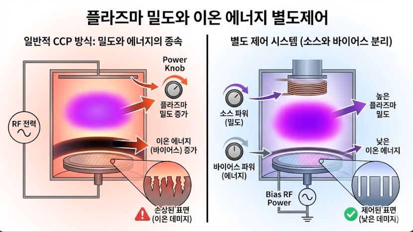
- CCP에서는 플라즈마 밀도를 높이려면 RF bias를 높일 수 밖에 없다. 그러면 밀도는 높아지겠지만, 이온이 웨이퍼를 때리는 세기가 강해져서 손상이 생긴다. 그렇다고 에너지를 낮추면 플라즈마 밀도가 줄어들고 공정 속도가 줄어든다.
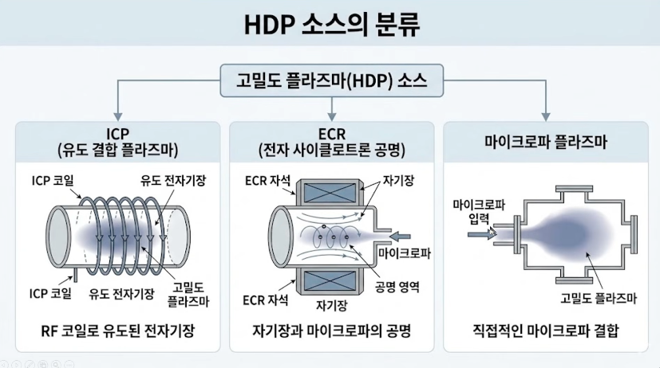
- 그래서 HDP 플라즈마를 만드는 방식이 나왔고, 그 방법에 이렇게 세가지가 있는 것이다.
- 양산에서 가장 많이 사용하는 것은 ICP 라고 함
10. HDP 소스: ICP와 ECR
10-1. ICP 플라즈마
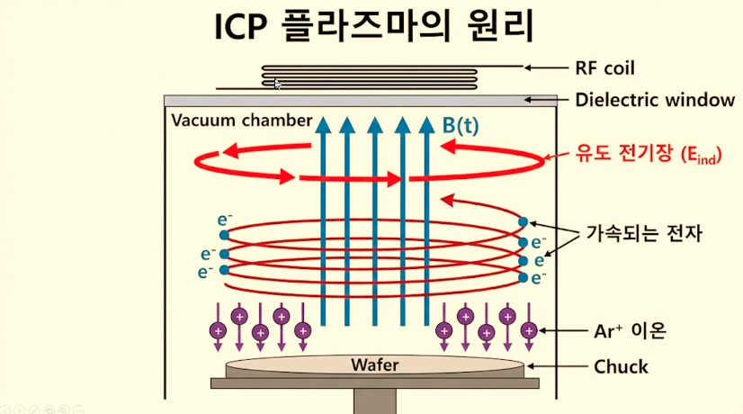
- Coil 에 RF 파워를 가하면, 수직 방향으로 자기장이 형성되고, 전자는 빙글빙글 회전하며 올라간다. 따라서 더 많은 Gas 입자들과 부딪히며 플라즈마의 밀도가 더 높아지게 된다. 300mm 웨이퍼에도 균일하게 식각이 가능하다고 한다
- (내 말로 정리) Coil에 RF 파워를 걸어주면 변하는 자기장이 전기장을 유도한다. 그 전기장을 따라서 전자가 회전 운동 하게 된다. 전극 사이에는 RF 파워를 걸어주면 전극에 수직인 방향으로 전기장이 생기고 Sheath 영역 생기고 이온들이 웨이퍼를 가격하게 된다.
10-2. ECR 플라즈마
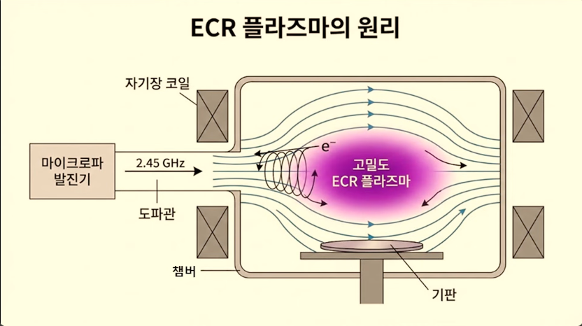
- 이것도 자기장에 의해 전자가 회전한다. 주파수가 2.45GHz(20억)로 매우 높다.
- 그와 동시에 마이크로파 발전기에서 동일한 주파수가 나오게 되어서 진동끼리 더해져서 상승간섭이 일어나서 공명 현상이 일어나게 된다.
- 이론적으로는 이상적이지만, 장비가 복잡하고 크게 만들 수가 없다.
11. Source RF와 Bias RF
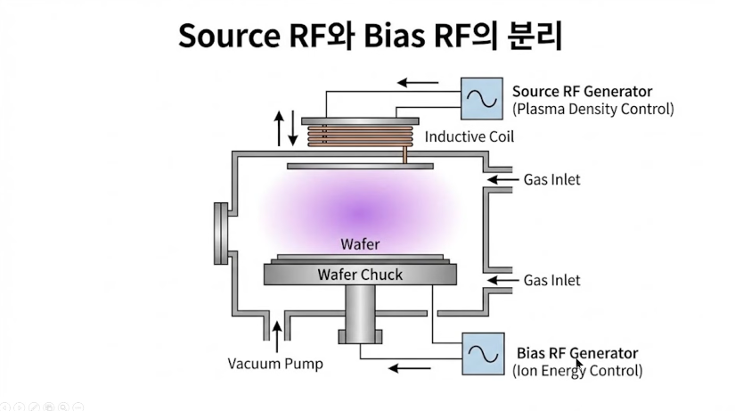
- Inductor 쪽에 Source RF가 인가되면 플라즈마를 발생시키는 데만 사용한다.
- Bias RF가 인가되면 Sheath 영역을 만들고 Bias를 만들어내는 전용이다.
- 여기에서 Bias는 치우치는 것이니까 Wafer를 때리는 부분에 전위차가 걸려서 당긴다고 생각하면 됨. 그리고 Source는 플라즈마를 만들어내는 원천이라고 생각하면 될 듯
12. 고종횡비 식각: DRIE와 Bosch 공정
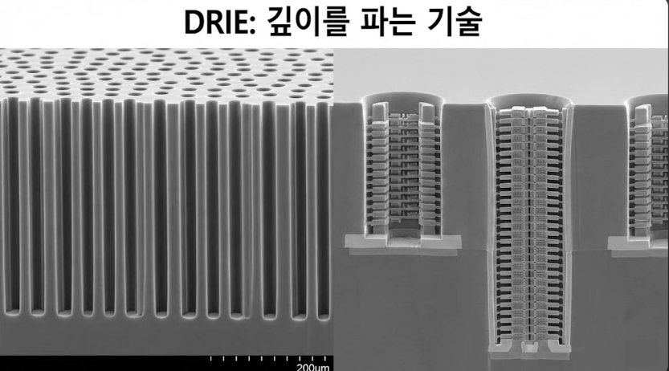
- DEEP RIE 를 하려면 HDP가 필수이다.
- HBM에서는 TSV(Through Silicon Via), NAND에서는 수백층의 산화막과 질화막이 쌓여있는 것에 구멍을 팔 때도 사용한다.
- 그러면 이렇게 종횡비가 큰 애들을 식각할 때는 어떻게 해야하는지 배워보자.
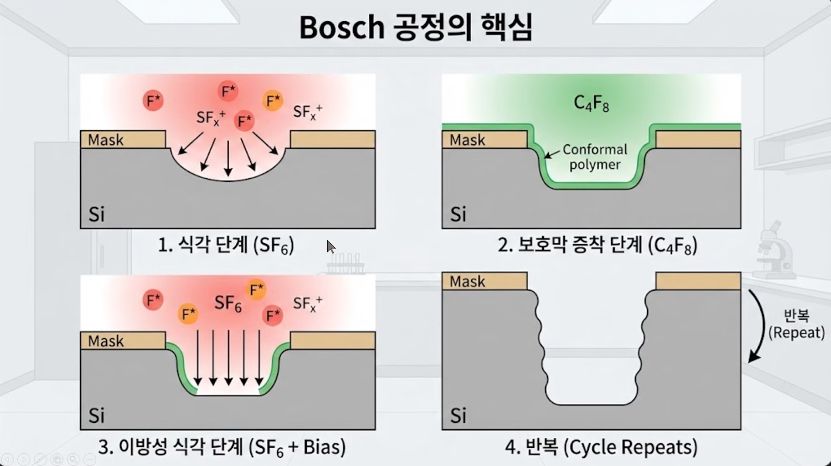
- Bosch 공정이라고 한댄다.
- 폴리머가 측벽을 보호해주게 되고, 이온들은 수직으로만 때리게 되니까 결과적으로 측벽은 계속 보호되고 수직으로 계속 식각이 된다.
→ 여기에서 Polymer는 C₄F₈ gas를 사용하고, 플라즈마에 의해서 어쩌구저쩌구 해서 (CH₂)ₓ polymer가 된다.
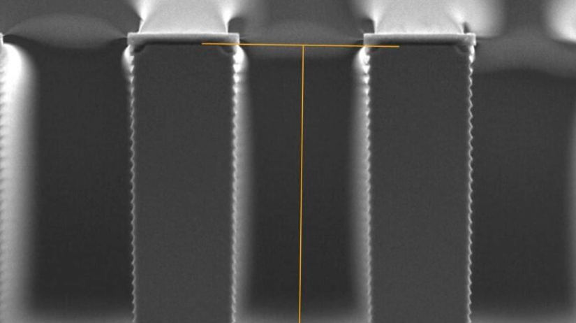
- 실제로는 이런 느낌으로 생김. 이렇게 보니까 와닿는 것 같기도 하고.
- 뒤에서도 다루지만 울퉁불퉁한 형상이 실제로 문제가 된다. 그래서 이걸 해결하기 위해서 ALE가 등장했다.
13. ALE (Atomic Layer Etching)
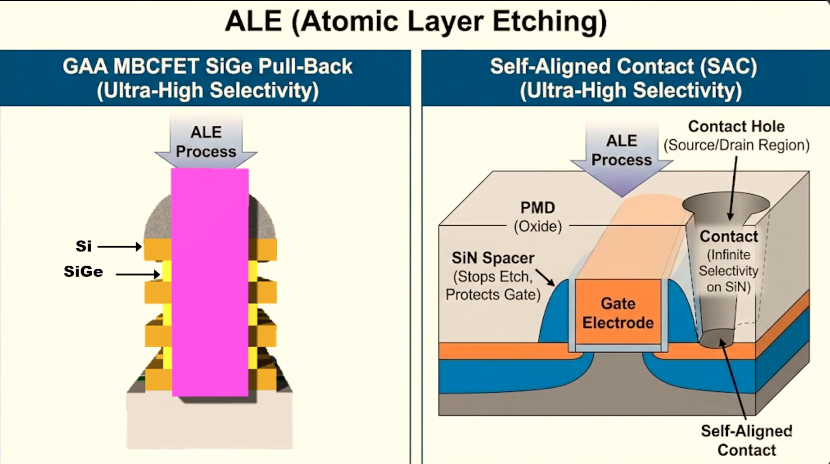
- 원자층 한 개씩 정밀하게 제거해나가는 방식이다. 따라서 선택비가 매우 좋다.
- GAA을 만들때 Si와 SiGe를 적층 구조로 만들고, 살짝 파인 곳에 Oxide 절연체를 넣어야하는데, 이 때 SiGe만 식각해 낼 수 있어야한다. 이 때 선택비는 무한이어야 한다.
*GAA가 어떻게 만들어지는 지 왜 저 구조인지는 해당 유튜버의 다른 강의를 보면서 이해 할 예정
- Contact이 만들어질 때 Gate를 갉아먹지 않게 Spacer에 의해 Self-aligned 되는 것을 SAC이라고 부른다.
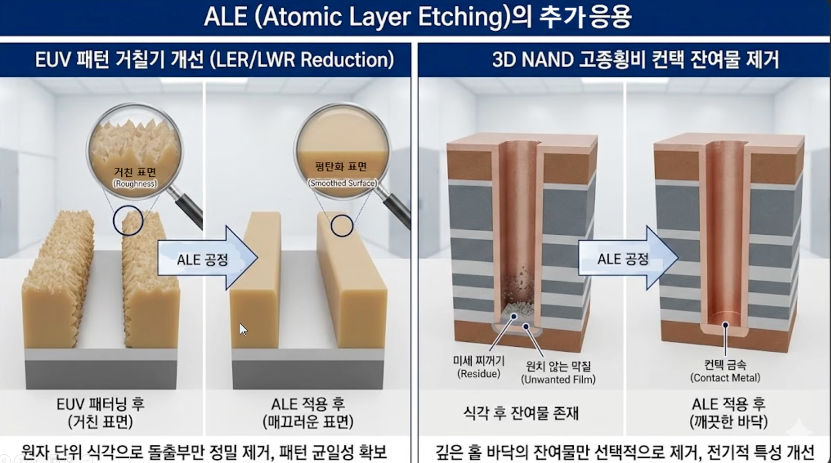
- EUV 하고 나서 표면이 이렇게 거칠거칠하게 된다. 이 때 표면을 다듬어주는 용도로 ALE를 사용할 수 있다.
- 고 종횡비의 Contact을 뚫고 나서 잔여물들이 존재할 때 ALE를 사용하면 청소가 가능하다.
14. Cryogenic Etching
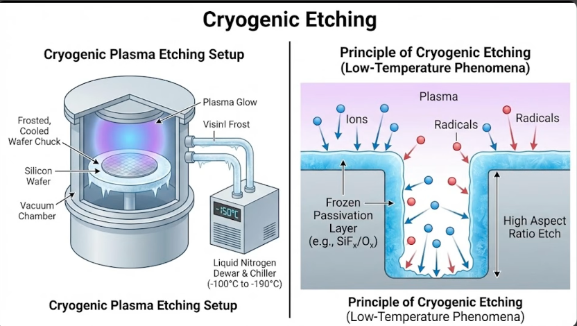
- 또 다른 차세대 식각 방법으로 극저온 식각 방법이 존재한다.
- Bosch 공정은 수백층을 쌓아야하는 NAND에서 고종횡비를 식각하기 위해 사용하는 방식이지만, 표면이 울퉁불퉁하다는 문제가 있다.
- Bosch에서는 의도적으로 가스를 불어넣어서 표면을 보호하는 것이지만, Cryogenic plasma는 냉각을 시키게 되면 식각 Gas들이 그냥 옆면에 얼어버리기 때문에 그 자체로 보호막처럼 거동하게 된다.
- 그래서 측벽은 식각이 안되고, 양이온들이 수직으로 때리면서 면이 열리게 되니까 계속 수직으로 식각이 가능하다. 그리고 나서 상온이되면 얼어있는 것들은 기화가 되어버린다.
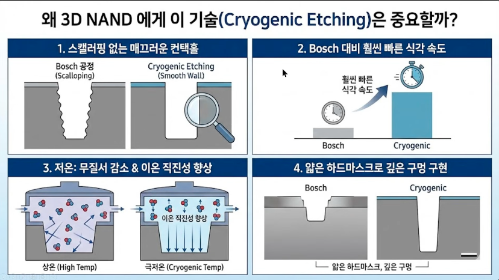
Cryo가 개꿀인 이유
- 일단 수직 식각이 가능하다.
- Bosch의 경우 증착(고분자로 측벽 보호)과 식각이 반복되기 때문에 시간이 오래 걸린다.
- 상온에서는 Random 했지만 저온이 되면 이온 직진성이 향상된다고 함
- Mask가 엄청 두껍지 않아도 된다.
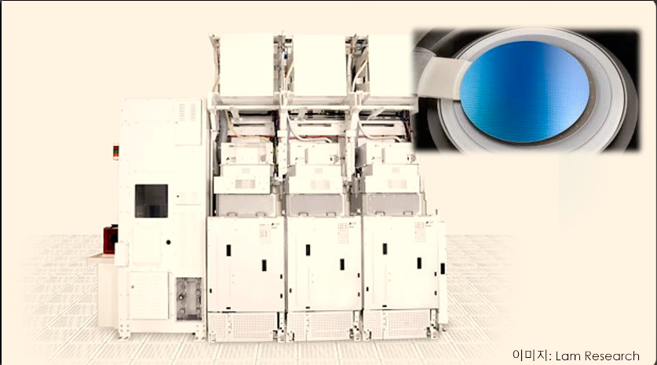
- NAND를 만들 때 이미 사용하고 있는 Lam 사의 Cryo 장비라고 한다.
15. 펄스 플라즈마
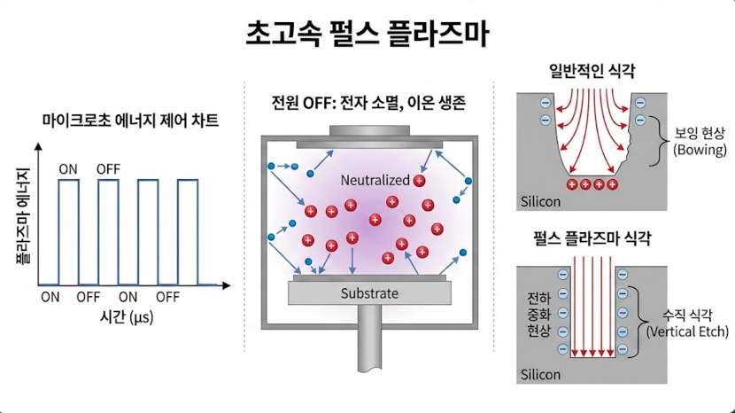
- 점점 더 미세화 되고 있기 때문에 플라즈마 자체의 밀도가 높아진다고 될 일이 아니다
- 펄스의 형태로 하게 되면 질량이 무거운 양이온은 플라즈마에 머물게 되고, 가벼운 전자는 이리저리 부딪혀서 사라지게 된다. 이 효과는 기존의 문제를 해결하게 된다.
- 기존에는 Bowing 현상이 일어나는데, 펄스 플라즈마 식각을 사용하게 되면 수직 식각이 가능해진다.
16. 차세대 식각의 응용과 방향
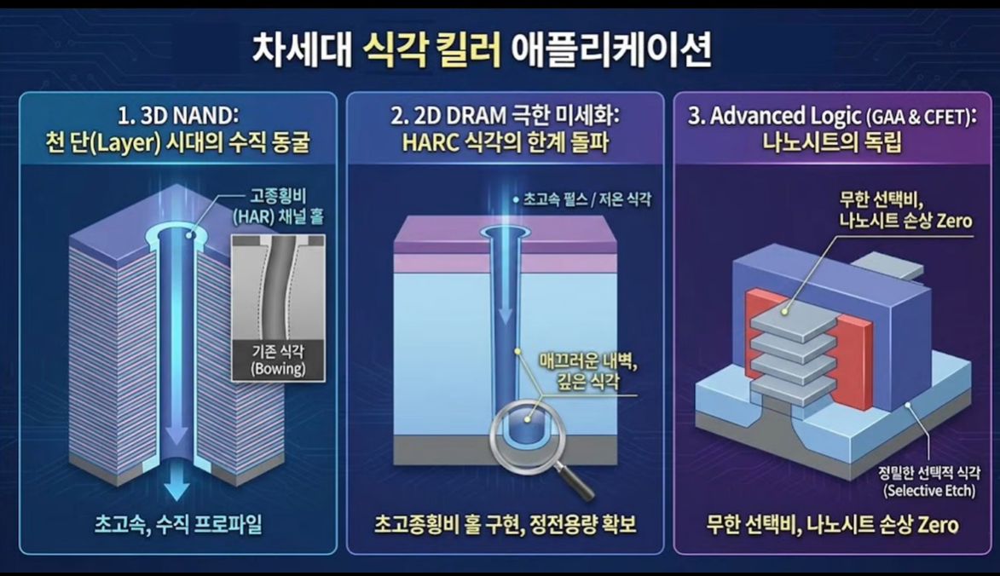
- 3D NAND의 contact hole은 층수가 늘어남에 따라 엄청 길어진다. 3~5μm
- DRAM에서도 Capacitor가 가늘고 깊어지고 있다. Contact hole의 Aspect Ratio 100에 수렴한다.
*HARC: High Aspect Ratio Contact 을 의미함
- GAA 랑 CFET에서 선택비가 거의 무한에 가깝게 Etching이 되어야 하는데 이 때도 ALE 를 사용하도록 연구 중이다.
- 차세대 식각은 데미지를 줄이고, 최소한의 타격으로 원하는 부분만 깊게 혹은 선택비가 좋게 식각하는 쪽이 목표이다.